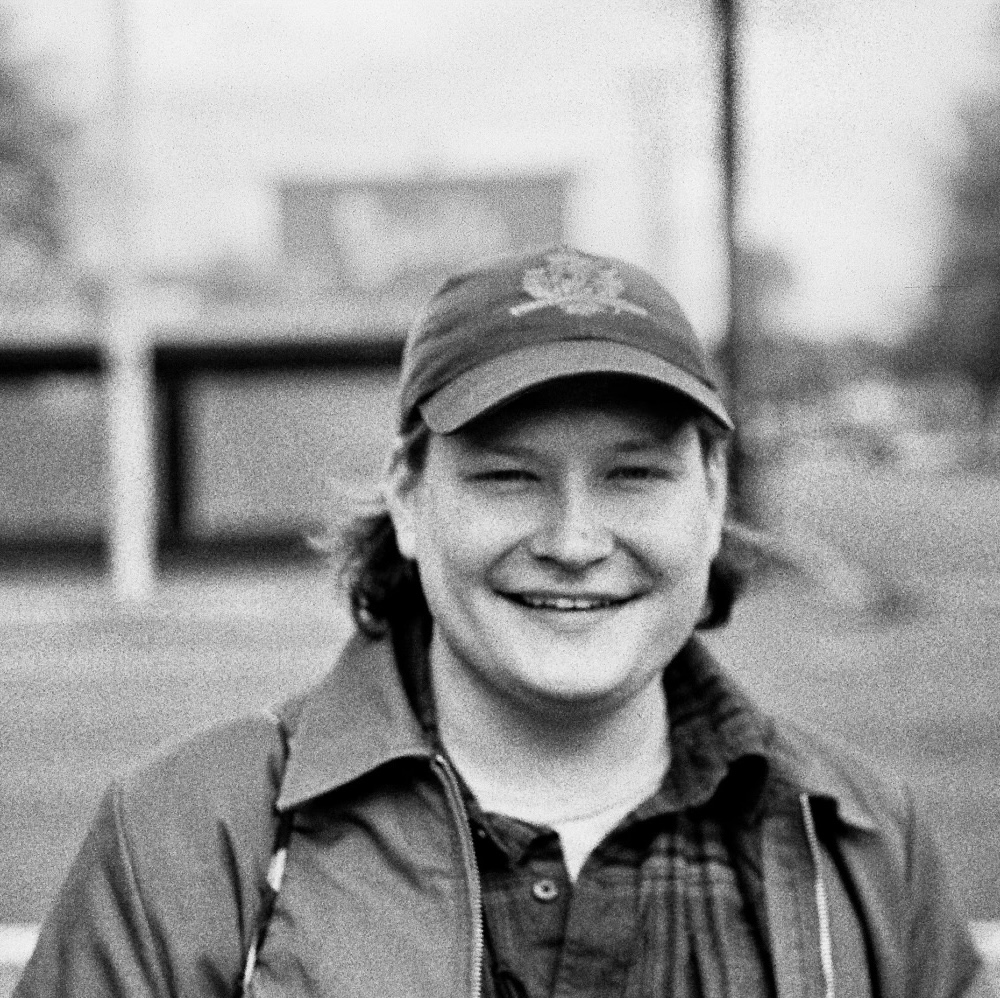
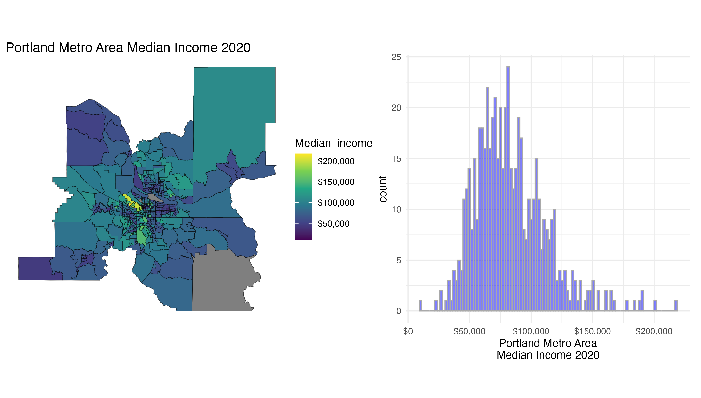
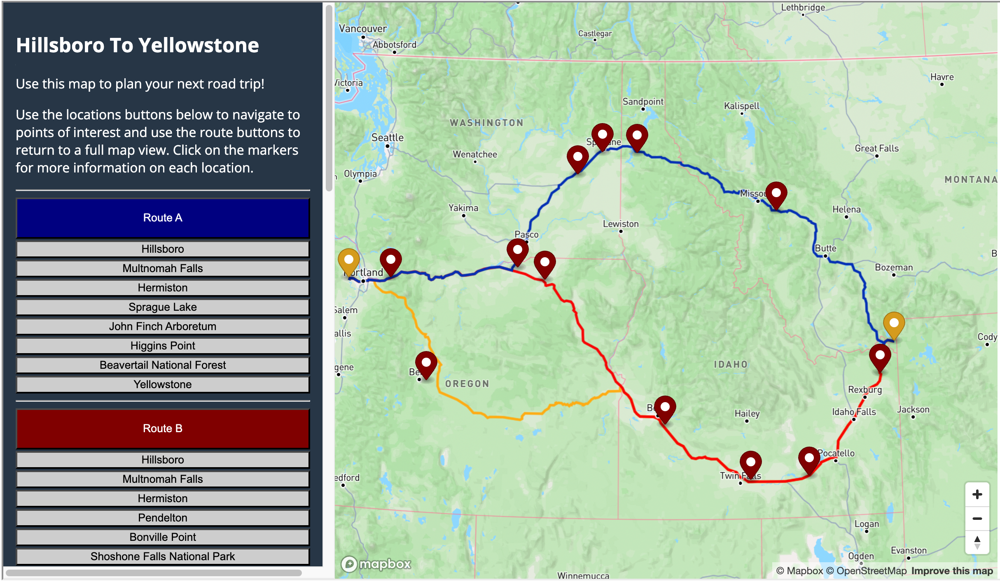
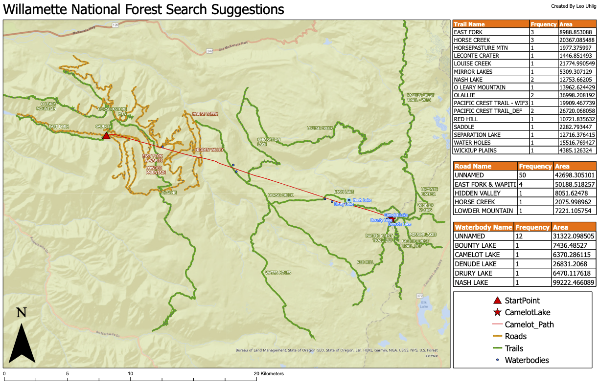
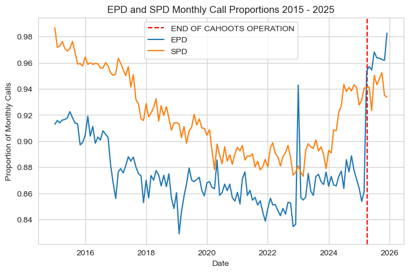

I am a recent graduate with a bachelor's degree in data science and geography from the University of Oregon. My studies have helped me develop an appreciation for using technology to solve complex problems and make data driven inferences. In my time at UO I have studied a broad range of topics including machine learning, web-mapping, GIS related analysis, and spatial demography. As I approach graduation this spring, I look forward to using these skills to make differences in my community.




EMAIL: leo.r.uhlig@gmail.com | GITHUB: luhlig123